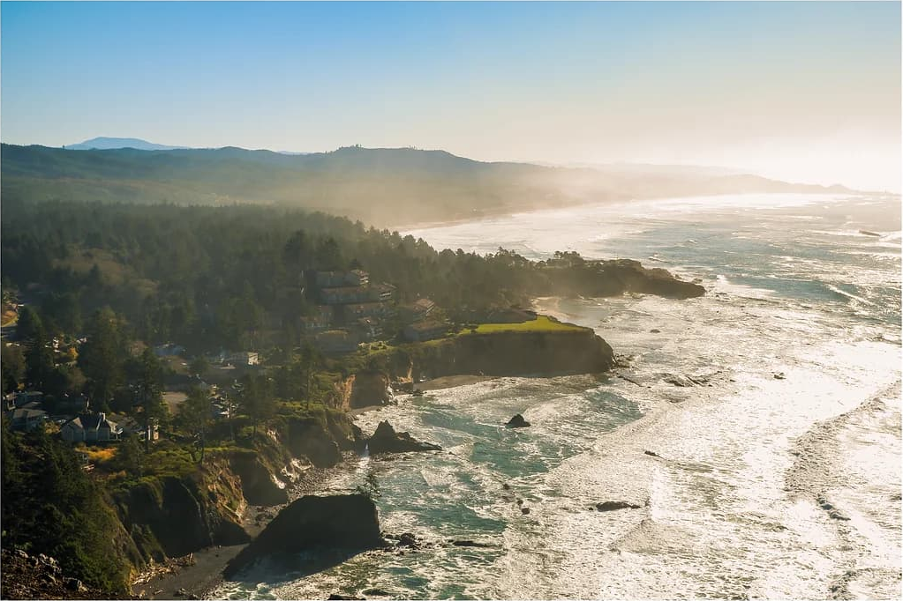

Pacific Northwest Wanderlust
- Dec 23,2023
- Vo Ngoc Khanh Nhi
"Life is not measured by the number of breaths we take but by the places and moments that take our breath away."
San Jose tối nay mưa rả rích (ô cái từ này lâu lắm rồi không viết!?). mưa nhìn cứ như Huế mình mỗi đông về. bật một chút nhạc Trịnh, và một ít rượu mơ, hôm nay lại là ngày đi làm cuối cùng của năm nữa, thật là lí tưởng để những ngón tay xinh xinh nì viết ra những con chữ không cần có đầu có đuôi, phơi ra những suy nghĩ mà rõ ràng là nó ở trọ trong đầu mình lâu đấy, chỉ là chẳng bao giờ (hay là cũng chẳng muốn) chia sẻ cùng quá nhiều người nữa. mà đúng ra là cũng chẳng nhiều người quan tâm á. ai cũng bận rộn với cuộc sống riêng mà.
Người ta thường bảo nhau rằng “cuộc đời là những chuyến đi”. nhưng không phải ai cũng được thực sự đi. hoặc mỗi người sẽ có một định nghĩa đi khác nhau. từ khi được ba mẹ mình chấp nhận thả cho đi xa, mỗi chuyến đi tới vùng đất mới mà mình chưa từng đặt chân tới- với mình đã là một chuyến đi.
Lần cuối mình thực hiện một chuyến đi là khi nào nhỉ? Solvang của tháng 5/2023? Pinnacle National Park của một ngày hè nóng tháng 7/2023? với một đứa đặc thù công việc là phải ở office 8 tiếng mỗi ngày, những chuyến đi thưa thớt cho tới một khoảnh khắc nào đó cơ thể mình tự nhiên khựng lại vài giây và bảo “hmmm ê hình như mình cần một chuyến đi!”. và với mình, chuyến đi nào cũng góp phần healing my inner soul. thằng bạn mình mà nghe cái từ healing này chắc nó sẽ cười thẳng vào mặt mình bằng cái nụ cười không lẫn đi đâu được. nhục vậy chứ, lỡ để cho nó biết quá nhiều thứ về mình :))
Chuyến đi Oregon-Washington này là cái road trip thứ 2 sau chuyến road trip đầu tiên đi cùng nhà của Chi Mai can cook. đi với chị Chi thì ít dùng tới não hơn :)) quan trọng là chuyến đi này mang lại nhiều cơ hội để hiểu thêm về những người mà mình nghĩ là mình quen cũng lâu đó. rồi còn gặp được thêm nhiều người mới và được lắng nghe những câu chuyện của họ nữa.
Cũng giống như việc đọc sách. mình thích đọc và sống trong cái cuộc sống của nhân vật trong sách. mình vẽ ra cuộc sống đó dựa vào lời kể của tác giả và sự tưởng tượng của bản thân. y như vậy. mình được gặp nhiều người, với những tính cách khác nhau, họ kể những câu chuyện của riêng họ- có khi là những khúc đường nhỏ xí trong đời, có khi là một vài lát cắt trong những ngày thường nhật, có khi là một vài câu nói bông đùa, có khi cũng là những câu chào xã giao qua lại- nhưng tất cả giúp mình vẽ được thật nhiều bức tranh về cuộc sống của mọi người. những bức tranh ngắt quãng không gắn kết nhưng đẹp tuyệt vời. những bức tranh mà khi nào chợt nhớ lại, có thể sẽ mang đến một chút tiếng cười, một chút đăm chiêu, và để lại nhiều sự chiêm nghiệm. chứ mấy lần trong đời được thấy một tình yêu chả cần nói gì nhiều, yêu một cô gái tên Trúc là cưới về xong trồng luôn cả mấy bụi trúc xinh muốn xỉu đằng sau nhà?!
Lạ nhỉ, thường mình không thích con người lắm. nay lại thấy ngưỡng mộ con người. chắc do sau chuyến đi này, được gặp nhiều người tốt bụng, lại giỏi giang nữa, nên trong một khoảnh khắc cái câu nói “mây tầng nào sẽ gặp mây tầng đó” lại xuất hiện và bản thân gật gù xác nhận sự logic này. để cho thấy sự trưởng thành, mình tự hứa sẽ cố gắng phát triển bản thân, hoàn thiện mình mỗi này, vì mình tin rằng càng chăm chỉ thì sẽ càng may mắn. còn lại cuộc đời sẽ tự manifest itself. thì cũng phải qua nhiều cơn mưa mới thấy được cầu vồng và nắng chói chang chứ đúng không?!
Chưa kể cái chuyến đi này còn mang mình quay lại cái thời trẻ trâu hét một tiếng cả lớp phải rén và cả trường phải nghe theo hồi cấp 2 nữa :)) họ nói đúng, những đứa bạn mà mình gặp lúc cấp 1, cấp 2 còn chơi tới giờ chính là những đứa chứng kiến mình lúc gớm nhất chả là cái gì, rồi lớn lên và thay đổi rõ nhất. và rồi lại quay lại cái chủ đề phải đi xa để lớn, thằng bạn mình chính là minh chứng việc có khi trường đời nó dạy mình khôn hơn nhiều mấy đứa được trường học dạy. phải đi mà gặp thật nhiều người để học hỏi và lớn lên. nhưng mà mình biết ơn thật nhiều, vì bạn bè mình dù là ở đâu đi nữa, chỉ bằng một tin nhắn khi gặp lại có thể cười nói như những đứa trẻ mười mấy tuổi chưa vào đời. dù sao thì chúng ta rốt cuộc cũng chỉ là những đứa trẻ mãi không muốn lớn thôi.
Mình của vài năm trước, rõ ràng là thích moi hết ruột gan ra để viết và chia sẻ cho mọi người thật nhiều suy nghĩ trong đầu. nhưng cũng là mình, cũng không phải quá lâu về trước, đã thấy rất thoải mái và nhẹ nhàng khi giữ những suy nghĩ cho riêng mình. nhất là khi mất đi một người quan trọng trong cuộc đời, tự nhiên giác ngộ luôn, mọi thứ trên đời thực sự chỉ là tạm thời, hoặc tạm bợ nghe cũng hay hay. mà khi đã biết không có gì là vĩnh viễn, ai chẳng muốn một lần được sống và làm những gì mình thích. chỉ là đôi khi thứ mình muốn lại có quá nhiều thứ ở giữa, ngăn mình lại, không cho mình được làm, mới đau chứ.

Nhiều người có thể đánh giá cuộc sống của người khác dựa vào mức thu nhập, số lượng chiếc xe, những bộ đồ hiệu và vô số những thứ vật chất khác trên đời. nhưng với mình, rõ ràng là những chuyến đi và những câu chuyện mà họ có được sau những chuyến đi đó chính là thứ mình nghĩ thực sự quý giá và ở lại lâu nhất. vật chất thì có thể mất đi, còn những câu chuyện thì ở lại vĩnh viễn. và mình nghĩ, thỉnh thoảng cũng nên tập viết lại những câu chuyện đó, như mình nói chẳng cần đầu đuôi gì hết, cứ viết thôi. dù để viết ra được những dòng này cũng không dễ gì với mình (vâng mình đã ngâm bài này suốt một tháng qua), một đứa cũng lâu lắm rồi coi việc viết lách là một bài thi quốc gia mà mình vô thi lại chằng muốn làm á. mà đời cũng ngộ! con bạn mình nó đi du lịch suốt, lại không thích viết (hoặc bận quá không có thời gian viết). còn mình ít khi đi chơi xa, lại thích ngồi ba hoa chích choè như này :))
"When I write, I feel like an armless, legless man with a crayon in his mouth.” - Kurt Vonnegut
Nếu cuộc đời chỉ vỏn vẹn trong 60 năm, mà mình sắp đi hết nửa cuộc đời rồi má ơi, thì liệu có bao nhiêu chuyến đi nữa trong đời mà mình có thể thực hiện nhỉ?
Sẽ có bao nhiêu lần được đi trong rừng ngẩng cổ nhìn lên những hàng cây xanh và tự thấy mình tan vào hết thảy những màu xanh đó?
Sẽ có bao nhiêu lần được ngắm những buổi hoàng hôn đẹp và chóng vánh như này nữa?
Sẽ có bao nhiêu lần được tự do đi những nơi mình muốn? Được một mình đi long nhong thành phố xa lạ ở Mỹ và tay cầm một cốc cà phê được làm từ Đà Lạt?
Đang viết ngon lành, Nancy kêu đi ngủ xong thấy mình viết nhiều chữ quá nên trầm trồ bảo mình viết nhiều vậy có mỏi tay chưa. mấy đứa nhỏ này như kiểu chuông báo thức mỗi buổi sáng. tụi nó đưa cái đầu trên mây của mình về lại đất liền. cũng giống như khi mình vừa về nhà sau chuyến đi chơi. post vacation hit me hard. vừa về nhà là 3 đứa nhỏ tấn công hỏi dồn dập những câu hỏi, làm mình tỉnh ngang. à thì ra là giờ phải trở về thực tế hơi phũ phàng nì. dì mình còn nói chỉ có trúng số mới nghỉ làm để đi chơi hoài vậy thôi, chứ giờ thì tỉnh lại để còn đi cày. mà mình thì ít khi mua số. nên thôi hẹn chuyến đi sau nhe. till next time :)
P/s: mình thích viết cho bản thân mình đọc, thỉnh thoảng cũng thích viết cho vài người mình mến. và mình cực kì thích được đọc những thứ người khác viết cho mình nữa. tiếc là tới giờ cũng chưa có được mấy người thích làm điều đó như mình ( cũng đúng, nhắn tin nhanh và tiện hơn nhiều). mình có một cái hộp “love letter” đựng tất cả những lá thư, tấm thiệp mà mọi người viết cho mình suốt 7 năm nay ở Mỹ. mình trân trọng cực kì. và tự nhiên mình nghĩ, giá như mình có thể biến tất cả những happy moments, những khoảnh khắc sống động mà mình tận hưởng nó as its best, gói tất cả lại trong một cái hộp như cái hộp mà mình để dành những lá thư. để mỗi khi cái phần hoài cổ của mình nó trỗi dậy, mình chỉ việc mở cái hộp đó ra, và sống lại những khoảnh khắc tuyệt vời đó, được cười như vậy lần nữa…